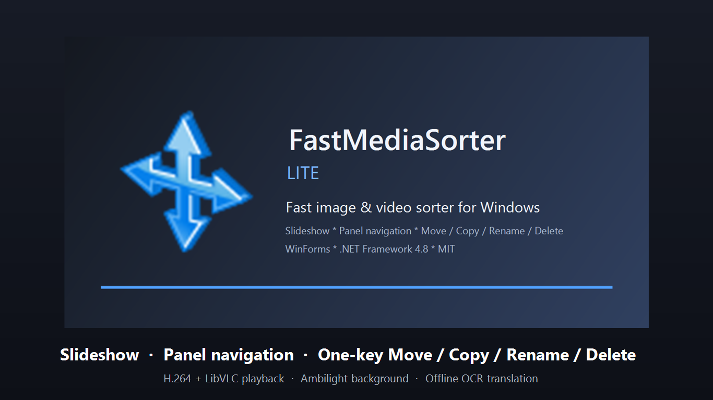
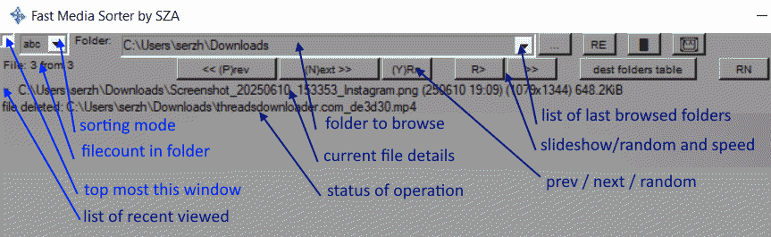
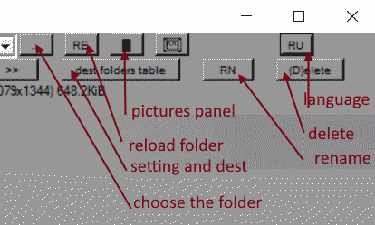
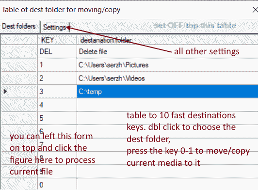
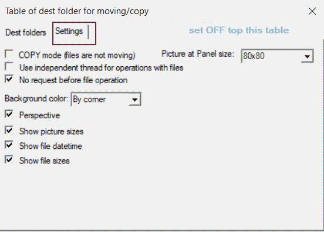
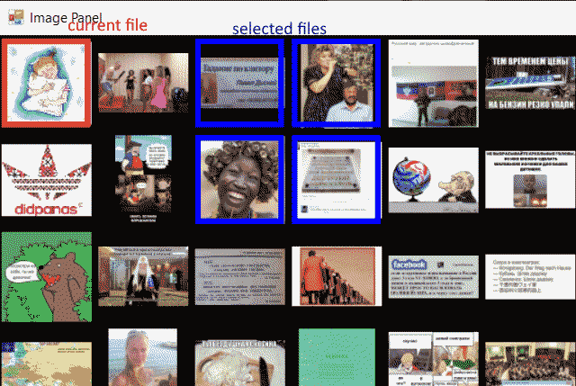

Быстрый сортировщик фото и видео для Windows Fast image & video sorter for Windows Швидкий сортувальник фото та відео для Windows
Листайте огромные папки с фото и видео на скорости, а затем перемещайте, копируйте, переименовывайте или удаляйте каждый файл одной клавишей. Мышка может отдохнуть. Бесплатно, открытый код, работает офлайн. Browse huge folders of photos and videos at speed, then move, copy, rename or delete each file with a single key. Your mouse can sit this one out. Free, open-source, and offline-ready. Гортайте величезні папки з фото та відео на швидкості, а потім переміщуйте, копіюйте, перейменовуйте чи видаляйте кожен файл однією клавішею. Миша може відпочити. Безкоштовно, відкритий код, працює офлайн.
Что это за программаWhat this app is forДля чого ця програма
Fast Media Sorter for Windows нужен для случаев, когда у вас есть большая папка с фото, видео, мемами, сканами или клипами, и её нужно быстро разобрать - без тяжёлых каталогизаторов, без подписки и без десятка лишних кликов на каждый файл. Папка, которую вы открывали «потом разберу», - да, именно она. Fast Media Sorter for Windows is for the moments when you have a huge folder full of photos, videos, memes, scans or clips and want to triage it quickly - without heavy catalog apps, without a subscription and without spending half a dozen clicks per file. That "I'll sort it later" folder? It's later. Fast Media Sorter for Windows потрібен у тих випадках, коли у вас є велика папка з фото, відео, мемами, сканами чи кліпами, і її треба швидко розібрати - без важких каталогізаторів, без підписки і без десятка зайвих кліків на кожен файл. Та папка «розберу потім»? Уже потім.
Быстрый пролистывательFast folder browserШвидкий переглядач папок
Стрелки, пробел, прыжки на 10 и 100, случайный выбор, слайд-шоу и быстрый переход по панели эскизов. Мышь подключается по желанию, а не по принуждению.Arrow keys, space, jumps by 10 and 100, random pick, slideshow and quick jumps through a thumbnail panel. The mouse joins in by invitation, not obligation.Стрілки, пробіл, стрибки на 10 і 100, випадковий вибір, слайд-шоу та швидкі переходи через панель ескізів. Миша долучається за бажанням, а не з примусу.
Сортировка одной клавишейOne-key sortingСортування однією клавішею
Назначьте папки на клавиши 0-9 и отправляйте текущий файл туда мгновенно: move или copy. Перетаскивать мышкой - для тех, кто никуда не спешит.Bind folders to keys 0-9 and send the current file there instantly: move or copy. Dragging things with the mouse is for people with time to spare.Прив'яжіть папки до клавіш 0-9 і миттєво надсилайте туди поточний файл: move або copy. Перетягувати мишкою - для тих, хто нікуди не поспішає.
Видео без возни с кодекамиVideo without codec huntingВідео без полювання на кодеки
Любой ролик играет прямо в окне через встроенный движок LibVLC - включая всё, что встроенный плеер Windows гордо отказывается понимать. Без похода за кодеками на сомнительные сайты.Every clip plays right in the window through the bundled LibVLC engine - including everything the Windows player proudly refuses to decode. No trip to a sketchy codec website required.Будь-який ролик грає просто у вікні через вбудований рушій LibVLC - включно з усім, що вбудований плеєр Windows гордо відмовляється розуміти. Без походу за кодеками на сумнівні сайти.
OCR и перевод поверх картинкиOCR and image overlay translationOCR і переклад поверх зображення
Удобно для скриншотов, манги, комиксов и сканов на другом языке: распознать текст и наложить перевод прямо на изображение.Useful for screenshots, manga, comics and foreign-language scans: recognize text and overlay a translation directly on top of the image.Зручно для скриншотів, манги, коміксів і сканів іншою мовою: розпізнати текст і накласти переклад просто на зображення.

Сама сортировка и просмотр работают локально. GitHub-релизы уже включают видеодвижки и OCR-языковые пакеты, поэтому при первом запуске ничего не подкачивается из сети. Ваши мемы остаются строго между вами и вашим диском.Sorting and browsing work locally. GitHub release builds already include the video runtimes and OCR language packs, so nothing extra is fetched on first launch. Your memes stay strictly between you and your hard drive.Сортування та перегляд працюють локально. GitHub-релізи вже містять відеорушії та OCR-мовні пакети, тож під час першого запуску нічого не докачується з мережі. Ваші меми лишаються суто між вами та вашим диском.
Установка и загрузкаInstall and downloadВстановлення та завантаження
Самый быстрый путь на Windows 10/11 - через winget. Откройте Windows Terminal или PowerShell и выполните:
The fastest route on Windows 10/11 is winget. Open Windows Terminal or PowerShell and run:
Найшвидший шлях на Windows 10/11 - через winget. Відкрийте Windows Terminal або PowerShell і виконайте:
>winget install --id SerZhyAle.FastMediaSorter
wingetwingetwinget
Тихая установка в per-user режиме. Ни одного назойливого «Далее > Далее > Готово».Silent per-user install. Not a single "Next > Next > Finish" to click through.Тиха установка в per-user режимі. Жодного настирливого «Далі > Далі > Готово».
GitHub ReleasesGitHub ReleasesGitHub Releases
setup.exe для обычной установки и .zip для portable/offline-запуска. Оба варианта уже содержат VLC runtimes и OCR packs.setup.exe for the regular install and .zip for a portable/offline bundle. Both already contain VLC runtimes and OCR packs.setup.exe для звичайного встановлення та .zip для portable/offline-пакета. Обидва варіанти вже містять VLC runtimes і OCR packs.
Microsoft Store
Альтернативный канал для тех, кто предпочитает магазин и автообновления.An alternative channel for people who prefer the Store and automatic updates.Альтернативний канал для тих, хто віддає перевагу Store та автооновленням.
Одна загрузка - обе программы. FastMediaSorter_LITE.exe - основная 64-битная программа: среда .NET уже внутри неё, устанавливать ничего не нужно; требуется Windows 10 1607+, Windows 11 или Server 2016+. FastMediaSorter_x86.exe - небольшая 32-битная программа для Windows 7/8.1 и 32-битной Windows, ей нужен .NET Framework 4.8. Она делает повседневную работу - просмотр, сортировку, видео, OCR и перевод, - но более новые возможности (масштаб, панель управления видео, выбор аудиодорожек и субтитров, «Открыть URL..», меню на картинке и видео) есть только в 64-битной, а общего доступа для Android в ней нет совсем: Share Manager, который он открывает, сам 64-битный и на таких машинах не запустится. Установщик ставит обе и направляет ярлык и привязки файлов на ту, которая работает на вашем ПК, - выбирать не придётся. Это по-прежнему одно приложение: одни настройки, а запуск одной программы при открытой другой просто выводит её окно вперёд.One download, both programs. FastMediaSorter_LITE.exe is the main 64-bit app - the .NET runtime is inside it, so there is nothing to install; it needs Windows 10 1607+, Windows 11 or Server 2016+. FastMediaSorter_x86.exe is a small 32-bit app for Windows 7/8.1 and 32-bit Windows, and needs .NET Framework 4.8. It does the everyday work - browsing, sorting, video, OCR and translation - but the newer additions (zoom, the video control bar, audio and subtitle picking, "Open URL..", the menus on a picture and a video) are 64-bit only, and Android Folder Share is not there at all: the Share Manager it opens is itself a 64-bit program and would not start on those machines. The installer sets up both and points the shortcut and file associations at whichever one runs on your PC - you never have to choose. It stays one application: one set of settings, and starting one while the other is open simply brings that window to the front.Одне завантаження - обидві програми. FastMediaSorter_LITE.exe - основна 64-бітна програма: середовище .NET уже всередині неї, встановлювати нічого не потрібно; потрібна Windows 10 1607+, Windows 11 або Server 2016+. FastMediaSorter_x86.exe - невелика 32-бітна програма для Windows 7/8.1 та 32-бітної Windows, їй потрібен .NET Framework 4.8. Вона робить повсякденну роботу - перегляд, сортування, відео, OCR і переклад, - але новіші можливості (масштаб, панель керування відео, вибір аудіодоріжок і субтитрів, «Відкрити URL..», меню на зображенні та відео) є лише в 64-бітній, а спільного доступу для Android у ній немає зовсім: Share Manager, який вона відкриває, сам 64-бітний і на таких машинах не запуститься. Інсталятор ставить обидві та спрямовує ярлик і прив'язки файлів на ту, що працює на вашому ПК, - обирати не доведеться. Це й далі один застосунок: одні налаштування, а запуск однієї програми при відкритій іншій просто виводить її вікно вперед.
- В интерактивном setup можно сразу зарегистрировать программу для распространённых форматов изображений.The interactive setup can optionally register the app for common image formats.В інтерактивному setup можна одразу зареєструвати програму для поширених форматів зображень.
- На Windows 10/11 система может ещё раз попросить подтвердить выбор в Default Apps - она любит уточнять.On Windows 10/11 the system may still ask you to confirm the choice in Default Apps - it likes to double-check.На Windows 10/11 система може ще раз попросити підтвердити вибір у Default Apps - вона любить перепитувати.
- Машинный перевод зависит от выбранного провайдера: локальный Ollama требует свою установку и модель, облачные сервисы требуют сеть.Machine translation still depends on the provider you configure: local Ollama needs its own install and model, while cloud services need network access.Машинний переклад залежить від вибраного провайдера: локальний Ollama потребує власної інсталяції та моделі, а хмарним сервісам потрібна мережа.
Ключевые возможностиCore featuresКлючові можливості
Быстрая навигацияFast navigationШвидка навігація
Листание тысяч файлов с клавиатуры, мышью и экранными кнопками. Прыжки на 10/100, к началу, концу и случайному файлу.Browse thousands of files from the keyboard, mouse or on-screen buttons. Jump by 10/100, to the start, the end or a random file.Гортання тисяч файлів з клавіатури, миші та екранних кнопок. Стрибки на 10/100, до початку, кінця або випадкового файлу.
Слайд-шоуSlideshow modesСлайд-шоу
Автоматический просмотр по порядку или вперемешку, включая ускорение повторным нажатием.Automatic playback in order or shuffled, including faster speed on repeated key presses.Автоматичний перегляд за порядком або впереміш, включно з прискоренням повторним натисканням.
Папки на 0-9Folder shortcuts on 0-9Папки на 0-9
Привязываете до 10 папок и дальше сортируете текущий файл одним нажатием. Если удобнее мышкой - включите панель получателей в настройках, вкладка «Каталоги-получатели»: узкий плавающий список этих папок поверх изображения, клик по строке отправляет туда текущий файл, нижняя строка удаляет. По умолчанию выключена.Bind up to 10 destination folders and sort the current file with a single press. If you would rather click, turn on the recipients panel in Settings > "Destination folders": a narrow floating list of those folders over the image, where a click on a row sends the current file there and the bottom row deletes it. Off by default.Прив'язуєте до 10 папок призначення і далі сортуєте поточний файл одним натисканням. Якщо зручніше мишкою - увімкніть панель отримувачів у налаштуваннях, вкладка «Каталоги-отримувачі»: вузький плавучий список цих папок поверх зображення, клік по рядку надсилає туди поточний файл, нижній рядок видаляє. Типово вимкнена.
Переименование, удаление, undoRename, delete, undoПерейменування, видалення, undo
Переименовать по F6, удалить по D/Del, отменить последнее действие по U.Rename with F6, delete with D/Del, undo the last file operation with U.Перейменувати через F6, видалити через D/Del, скасувати останню файлову операцію через U.
Панель эскизов и таблицаThumbnail panel and table viewПанель ескізів і таблиця
Быстрый визуальный обзор текущей папки и отдельная таблица для папок назначения и настроек.A quick visual overview of the current folder and a dedicated table for destination folders and settings.Швидкий візуальний огляд поточної папки та окрема таблиця для папок призначення і налаштувань.
Широкая поддержка видеоBroad video supportШирока підтримка відео
Воспроизведение идёт через встроенный движок LibVLC, поэтому экзотические кодеки открываются прямо в окне. В 64-битной программе внизу есть панель управления: пуск/пауза, полоса перемотки, время, звук и громкость. Она появляется при наведении мыши и через пару секунд уходит, а на паузе остаётся. A переключает аудиодорожку, V - субтитры; выбор запоминается по языку, поэтому следующая серия откроется уже с ним. Правый клик по кнопке выбора файла даёт «Открыть URL..»: видео по smb://, sftp://, ftp://, http(s)://, nfs:// или rtsp:// играет без предварительной загрузки.Playback runs on the bundled LibVLC engine, so even odd codecs open right in the window. The 64-bit program adds a control bar along the bottom: play/pause, a seek bar, running time, mute and a volume slider. It appears on mouse-over and slips away after a couple of seconds, but stays put while paused. A switches the audio track and V the subtitles; your pick is remembered by language, so the next episode opens with it. Right-click the file-selection button for "Open URL..": video over smb://, sftp://, ftp://, http(s)://, nfs:// or rtsp:// plays without downloading it first.Відтворення йде через вбудований рушій LibVLC, тому навіть екзотичні кодеки відкриваються просто у вікні. У 64-бітній програмі внизу є панель керування: пуск/пауза, смуга перемотування, час, звук і гучність. Вона з'являється при наведенні миші й за пару секунд зникає, а на паузі лишається. A перемикає аудіодоріжку, V - субтитри; вибір запам'ятовується за мовою, тож наступна серія відкриється вже з ним. Правий клік по кнопці вибору файлу дає «Відкрити URL..»: відео за smb://, sftp://, ftp://, http(s)://, nfs:// чи rtsp:// грає без попереднього завантаження.
Ambilight-фонAmbilight-style backgroundAmbilight-фон
Боковые поля не обязаны быть скучно-чёрными: включите цветовое или перспективное продолжение картинки. Чёрные полосы тоже имеют чувства. В 64-битной программе можно пойти дальше: «Динамическая перспектива» гасит полосы в цвет фона тем сильнее, чем дальше они от фото, - снимок сидит в свечении, а не между двух сплошных плит. Ей нужна включённая «Перспектива», по умолчанию она выключена, а её подпункт «Анимировать» выращивает свечение от края фото при открытии нового снимка примерно за треть секунды.Side bars don't have to stay boringly black: enable a color or perspective continuation of the image. Black bars have feelings too. The 64-bit program can go further: "Dynamic perspective" fades the bars into the background colour the further they get from the photo, so the picture sits in a glow rather than between two solid slabs. It needs "Perspective" on, is off by default, and its own "Animated" sub-option grows the glow out of the photo edge when a new photo opens, in about a third of a second.Бокові поля не зобов'язані бути нудно-чорними: увімкніть кольорове чи перспективне продовження картинки. Чорні смуги теж мають почуття. У 64-бітній програмі можна піти далі: «Динамічна перспектива» гасить смуги в колір фону тим сильніше, чим далі вони від фото, - знімок сидить у сяйві, а не між двох суцільних плит. Їй потрібна увімкнена «Перспектива», типово вона вимкнена, а її підпункт «Анімувати» вирощує сяйво від краю фото при відкритті нового знімка приблизно за третину секунди.
OCR + переводOCR + translationOCR + переклад
Распознавание текста через Tesseract и наложение перевода прямо на изображение - для всех тех скриншотов, которые вы так и не смогли прочитать.Text recognition through Tesseract and a translation overlay drawn right on the image - for all those screenshots you never quite managed to read.Розпізнавання тексту через Tesseract і накладання перекладу просто на зображення - для всіх тих скриншотів, які ви так і не змогли прочитати.
Масштаб и перетаскиваниеZoom and panningМасштаб і перетягування
Серые клавиши NumPad + и - меняют масштаб у курсора мыши, / вписывает в окно, * даёт реальный размер (100 %). Колесо с Ctrl тоже масштабирует, с Shift - 100 %, с Alt - вписать. Увеличенную картинку можно таскать левой кнопкой. Обычное колесо по-прежнему листает файлы, пока вы не включите «Колесо масштабирует» в настройках, вкладка «Просмотр». Только в 64-битной программе.The grey NumPad + and - zoom at the mouse cursor, / fits to the window and * gives actual size (100 %). The wheel zooms with Ctrl, jumps to 100 % with Shift and fits with Alt. Drag a zoomed picture with the left button to pan it. The plain wheel still browses files until you turn on "Wheel zooms" in Settings > Viewing. 64-bit program only.Сірі клавіші NumPad + і - змінюють масштаб біля курсора миші, / вписує у вікно, * дає реальний розмір (100 %). Колесо з Ctrl теж масштабує, з Shift - 100 %, з Alt - вписати. Збільшену картинку можна перетягувати лівою кнопкою. Звичайне колесо, як і раніше, гортає файли, доки ви не увімкнете «Колесо масштабує» в налаштуваннях, вкладка «Перегляд». Лише у 64-бітній програмі.
Меню на картинке и видеоMenus on a picture and a videoМеню на зображенні та відео
Средняя кнопка на картинке открывает меню со всем, что с ней можно сделать: поворот в обе стороны, вписать в окно, реальный размер, перевод текста на изображении (когда включён OCR-перевод), полный экран, следующий/предыдущий файл, переименовать, отправить в папку назначения, удалить, скопировать путь к файлу. Клик по видео ставит на паузу и снимает с неё, а правая кнопка открывает своё меню: звук, повтор, аудиодорожка, субтитры и те же файловые действия. Правая кнопка на картинке по-прежнему значит «предыдущий файл». Только в 64-битной программе.The middle button on a picture opens a menu with everything you can do to it: rotate either way, fit to window, actual size, translate the text on it (when OCR translation is on), full screen, next/previous file, rename, move to a destination folder, delete, copy the file path. A click on a video pauses and resumes it, and the right button opens its own menu: mute, repeat, audio track, subtitles and the same file actions. The right button on a picture still means "previous file". 64-bit program only.Середня кнопка на зображенні відкриває меню з усім, що з ним можна зробити: поворот в обидва боки, вписати у вікно, реальний розмір, переклад тексту на зображенні (коли увімкнено OCR-переклад), повний екран, наступний/попередній файл, перейменувати, надіслати в папку призначення, видалити, скопіювати шлях до файлу. Клік по відео ставить на паузу і знімає з неї, а права кнопка відкриває власне меню: звук, повтор, аудіодоріжка, субтитри та ті самі файлові дії. Права кнопка на зображенні, як і раніше, означає «попередній файл». Лише у 64-бітній програмі.
Качество и просмотрImage quality and viewingЯкість та перегляд
Авто-поворот фото по EXIF, качественное бикубическое масштабирование, подпись с именем файла и позицией поверх кадра и настраиваемый интервал слайд-шоу. Анимированные WEBP программа декодирует сама, поэтому они открываются даже без кодека WebP для Windows.EXIF auto-rotation, high-quality bicubic scaling, an on-image overlay with the file name and position, and a configurable slideshow interval. Animated WEBP is decoded by the app itself, so it opens even without the Windows WebP codec.Авто-поворот фото за EXIF, якісне бікубічне масштабування, напис з ім'ям файлу та позицією поверх кадру і налаштовуваний інтервал слайд-шоу. Анімовані WEBP програма декодує сама, тому вони відкриваються навіть без кодека WebP для Windows.
Программа по умолчаниюDefault viewer and playerПрограма за замовчуванням
Регистрация приложения программой просмотра изображений и/или видеоплеером по умолчанию - для текущего пользователя, без прав администратора.Register the app as the default image viewer and/or video player - per-user, no admin rights needed.Реєстрація застосунку переглядачем зображень та/або відеоплеєром за замовчуванням - для поточного користувача, без прав адміністратора.
Общий доступ для AndroidAndroid Folder ShareСпільний доступ для Android
Копилот для мобильного приложения: встроенный SFTP-сервер публикует ваши собственные папки с медиа и файлами в FastMediaSorter для Android - в домашней сети или через интернет, подключение по QR-коду. Открывается отдельная программа Share Manager, поэтому нужна 64-битная программа: в 32-битной этой возможности нет. Как опубликовать папки →A copilot for the mobile app: a built-in SFTP server publishes your own media and file folders to FastMediaSorter for Android - over your LAN or across the internet, paired by QR code. It opens the separate Share Manager program, so it needs the 64-bit program: the 32-bit one does not have this. How to publish your folders →Копілот для мобільного застосунку: вбудований SFTP-сервер публікує ваші власні папки з медіа та файлами у FastMediaSorter для Android - у мережі або через інтернет, підключення за QR-кодом. Відкривається окрема програма Share Manager, тому потрібна 64-бітна програма: у 32-бітній цієї можливості немає. Як опублікувати папки →
Сохранение настроекSaved preferencesЗбереження налаштувань
Недавние папки, режим copy/move, язык интерфейса и другие рабочие настройки сохраняются между сессиями.Recent folders, copy/move mode, the UI language and other working preferences persist between sessions.Нещодавні папки, режим copy/move, мова інтерфейсу та інші робочі налаштування зберігаються між сесіями.
Как пользоватьсяHow to use itЯк користуватися
Откройте папкуOpen a folderВідкрийте папку
Запустите программу и выберите папку с фото и видео, либо откройте любой медиафайл прямо из Проводника. Да, ту самую папку, к которой вы боялись подступиться.Launch the app and pick a folder with photos and videos, or open any media file straight from Explorer. Yes, the folder you've been avoiding.Запустіть програму та виберіть папку з фото й відео, або відкрийте будь-який медіафайл просто з Провідника. Так, ту саму папку, до якої ви боялися підступитися.
Назначьте папки на цифрыAssign folders to digitsПризначте папки на цифри
Откройте таблицу папок назначения, привяжите целевые папки к клавишам 0-9 и выберите, перемещать файлы или копировать.Open the destination-folder table, bind target folders to keys 0-9 and choose whether files are moved or copied.Відкрийте таблицю папок призначення, прив'яжіть цільові папки до клавіш 0-9 і виберіть, переміщувати файли чи копіювати.
Просматривайте файлыBrowse filesПереглядайте файли
Листайте стрелками, пробелом или запускайте slideshow, если хотите просто быстро пройти всю папку.Step through with the arrows or space, or start a slideshow if you simply want to sweep through the whole folder quickly.Гортайте стрілками, пробілом або запускайте slideshow, якщо хочете просто швидко пройти всю папку.
Сортируйте одной клавишейSort with one keyСортуйте однією клавішею
Нажмите цифру, чтобы отправить файл в нужную папку. Для удаления есть D, для rename - F6, для undo - U.Press a digit to send the file to its target folder. Use D to delete, F6 to rename and U to undo.Натисніть цифру, щоб відправити файл у потрібну папку. Для видалення є D, для rename - F6, для undo - U.
Подключайте дополнительные режимыUse the extra modesПідключайте додаткові режими
Когда нужно, открывайте панель эскизов, включайте полноэкранный режим, вращайте изображения или запускайте OCR + перевод.When needed, open the thumbnail panel, go fullscreen, rotate images or launch OCR + translation.Коли потрібно, відкривайте панель ескізів, вмикайте повноекранний режим, обертайте зображення або запускайте OCR + переклад.

Горячие клавишиKeyboard shortcutsГарячі клавіші
НавигацияNavigationНавігація
Файловые операцииFile operationsФайлові операції
ПросмотрViewПерегляд
Масштаб и дорожки (только 64-бит)Zoom and tracks (64-bit only)Масштаб і доріжки (лише 64-біт)
ИнструментыToolsІнструменти
Интерфейс на реальных скриншотахThe interface on real screenshotsІнтерфейс на реальних скриншотах




Примеры использованияUsage examplesПриклади використання
Разбор фотосвалкиCull a photo dumpРозбір фотозвалища
Откройте импорт с карты памяти, привяжите папки «Оставить», «Правка» и «Корзина» к клавишам 1-3 и пролетайте стрелками: одно нажатие на фото. Все сорок дублей одного заката найдут свой дом.Point it at a memory-card import, bind "Keep", "Edit" and "Trash" folders to keys 1-3, then fly through with the arrows: one keypress per photo. All forty takes of the same sunset finally find a home.Відкрийте імпорт з карти пам'яті, прив'яжіть папки «Залишити», «Правка» та «Кошик» до клавіш 1-3 і пролітайте стрілками: одне натискання на фото. Усі сорок дублів одного заходу сонця знайдуть свій дім.
Порядок в видеоколлекцииTidy a video collectionЛад у відеоколекції
Просматривайте клипы любого кодека прямо в окне, затем раскладывайте их по папкам. LibVLC берёт форматы, которые не тянет системный плеер.Preview clips of any codec right in the app window, then distribute them into folders. LibVLC covers the formats your system player cannot handle.Переглядайте кліпи будь-якого кодека просто у вікні програми, а потім розкладайте їх по папках. LibVLC бере формати, які не тягне системний плеєр.
Чтение картинок на другом языкеRead foreign-language imagesЧитання зображень іншою мовою
Откройте скриншот, страницу манги или скан, нажмите T и читайте перевод, наложенный прямо на изображение.Open a screenshot, manga page or scan, press T, and read the translated text overlaid directly on top of the picture.Відкрийте скриншот, сторінку манги чи скан, натисніть T і читайте переклад, накладений просто поверх зображення.
Видео, OCR и offline-пакетVideo, OCR and the offline bundleВідео, OCR та offline-пакет
FastMediaSorter проигрывает видео через встроенный движок LibVLC, а не опирается на системный плеер. Это особенно полезно на старых архивах, экзотических кодеках и сборных видеопапках, где системный плеер привычно показывает чёрный экран и делает вид, что так и надо.FastMediaSorter plays video through a bundled LibVLC engine instead of leaning on the system player. That matters most on old archives, odd codecs and mixed video folders where the system player usually shows a black screen and pretends that's the intended result.FastMediaSorter програє відео через вбудований рушій LibVLC, а не спирається на системний плеєр. Це особливо корисно на старих архівах, екзотичних кодеках і змішаних відеопапках, де системний плеєр звично показує чорний екран і вдає, що так і задумано.
В GitHub-сборках уже лежат OCR language packs, поэтому локальное распознавание работает без дополнительной догрузки. Но сам машинный перевод зависит от того, какой backend вы настроите: локальный или облачный.The GitHub builds already ship OCR language packs, so local recognition works without an extra download. The translation step itself still depends on whichever backend you configure: local or cloud.У GitHub-збірках уже є OCR language packs, тому локальне розпізнавання працює без додаткового завантаження. Сам переклад усе ще залежить від того, який backend ви налаштуєте: локальний чи хмарний.
- Обычные
setup.exeи portable.zipуже offline-ready.Both the regularsetup.exeand the portable.zipare already offline-ready.І звичайнийsetup.exe, і portable.zipуже offline-ready. - Для OCR используется Tesseract; для сложного видео - LibVLC.Tesseract handles OCR; LibVLC handles difficult video formats.За OCR відповідає Tesseract; за складні відеоформати - LibVLC.
- Если вам нужен privacy-friendly режим, основные действия сортировки и просмотра можно делать вообще без облака.If you want a privacy-friendly workflow, the core sorting and browsing features can be used without any cloud service at all.Якщо вам потрібен privacy-friendly режим, основні дії сортування й перегляду можна робити взагалі без хмари.
Мобильная и сопутствующие программыMobile and companion appsМобільна та супутні програми
FastMediaSorter v2 - та же идея сортировки в дороге: локальные файлы, сетевые диски (SMB, SFTP, FTP) и облака (Google Drive, OneDrive, Dropbox), встроенный плеер, EPUB-читалка и перевод по OCR.- the same sorting idea on the go: local files, network drives (SMB, SFTP, FTP) and cloud storage (Google Drive, OneDrive, Dropbox), a built-in player, EPUB reader and OCR translation.- та сама ідея сортування в дорозі: локальні файли, мережеві диски (SMB, SFTP, FTP) та хмари (Google Drive, OneDrive, Dropbox), вбудований плеєр, EPUB-читалка й переклад через OCR. Сайт →Website →Сайт → · GitHub → · Google Play → · IzzyOnDroid → · APK →
- doc-html-translate - конвертер EPUB / PDF / FB2 / MOBI / TXT / Markdown / HTML в локальный HTML с опциональным переводом.- converts EPUB / PDF / FB2 / MOBI / TXT / Markdown / HTML to local HTML with optional translation.- конвертує EPUB / PDF / FB2 / MOBI / TXT / Markdown / HTML у локальний HTML з опційним перекладом. GitHub → ·
winget install SerZhyAle.DocHtmlTranslate - Universal Agent Kit - набор пресетов и инструментов для ИИ-агентов.- a portable set of presets and tooling for AI agents.- набір пресетів та інструментів для ШІ-агентів. serzhyale.github.io/universal-agent-kit →